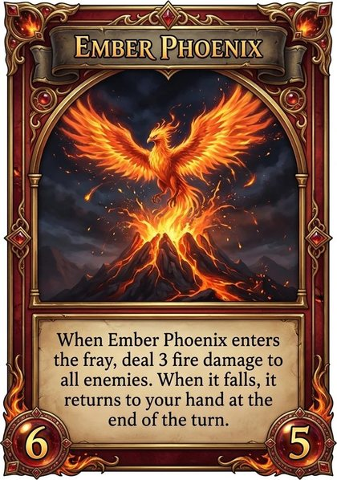

01 · Trading cards
トレカは、表と裏で1枚。
カードを枠に置くと自動で撮影。続けて裏返して置けば、表と裏が1枚のカードになります。切り抜き・ゆがみ補正・反射消しも自動です。
- アイドルのトレカ・スポーツカード・ゲームのカードを、ジャンルごとにフォルダで整理
- 状態（美品・傷ありなど）・取得日・メモを記録。四隅まで拡大してチェック
- 表と裏を並べた画像を作って共有。SNSやフリマへの出品にも
- 鑑賞モードで、コレクションをスライドショーのように眺める